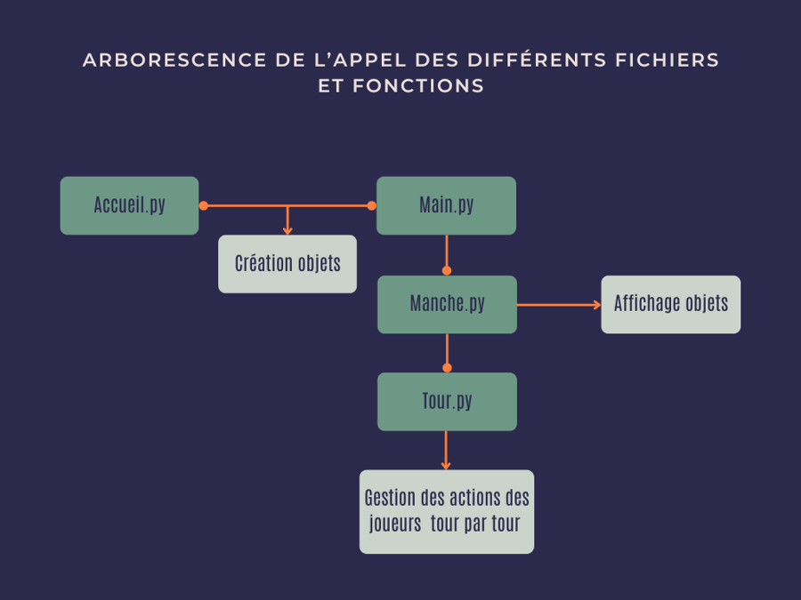
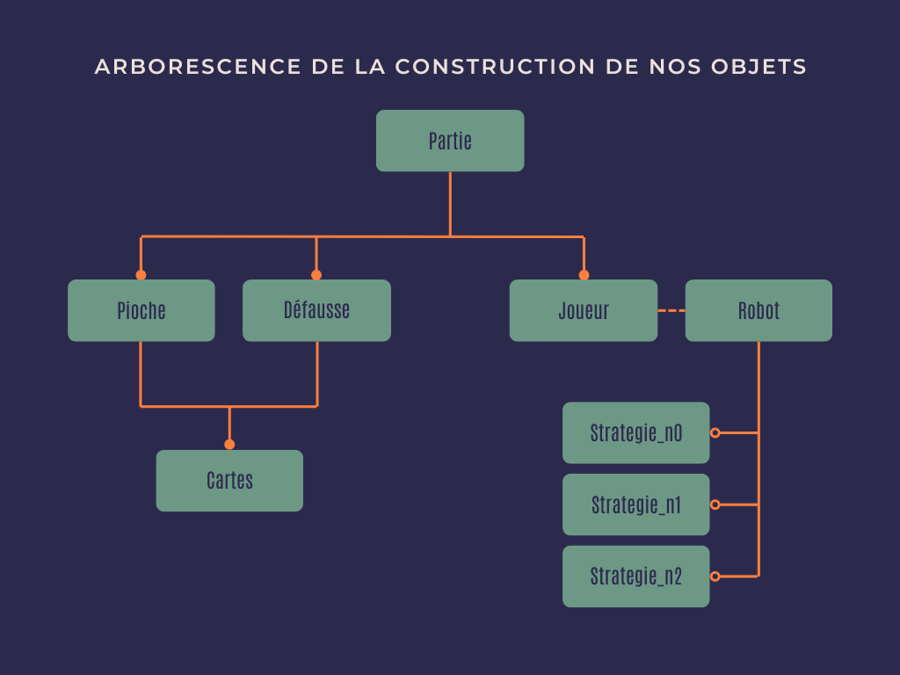

Nos fichiers et fonctions
Les différentes fonctionnalités du jeu sont séparées en plusieurs fichiers.


Les fichiers concernant le lancement du jeu:
Les fichiers concernant les classes:
Les différentes fonctionnalités du jeu sont séparées en plusieurs fichiers.
Les fichiers concernant le lancement du jeu:
Les fichiers concernant les classes: